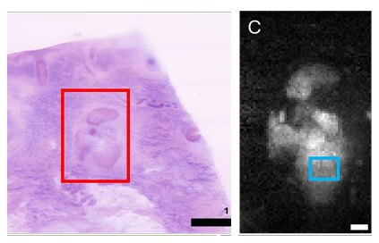

Multimodal AI Surgical Guidance for Skin Cancer
Develop multimodal AI methods for intraoperative guidance and clinical decision support in skin cancer surgery. This work adapts pathology foundation models to new imaging modalities where labeled data are scarce, and integrates optical microscopy and spectroscopy with generative AI for tissue characterization, tumor detection, and margin assessment, with an emphasis on interpretable, biologically grounded evaluation that can inform surgical decision-making.